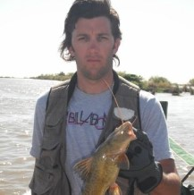
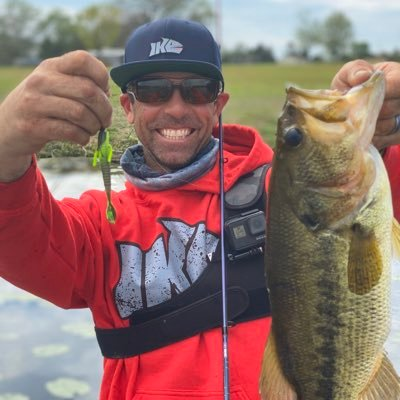
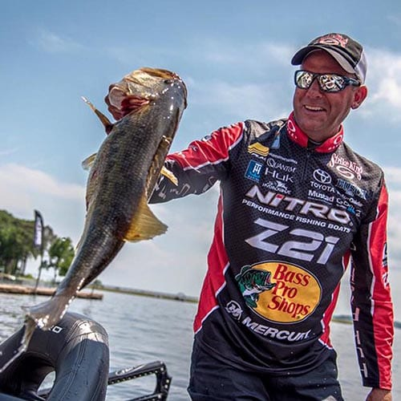

Site de Pesca
Pro Anglers
Inicio
Galería de Fotos
Paquetes
Amazonas
Sauce Viejo
Santa Elena
Nosotros

Fernando Soria.
Abu Garcia Pro.
Ceo Pro Anglers.
3 Veces Campeon Bass Pro Tournament.
Abu Garcia, Rapala.
Carnada y Bait Cast.
24 años de experiencia.
Sauce Viejo - Esquina.

Mike Iaconelli.
Pescador de Lobina.
Hoplias Lures Pro Staff.
2 Veces Campeon Bass Master Tournament.
Shimano, Hoplias Lures.
Bait Cast y Boya.
22 años de experiencia.
Zona Alto Parana.

Kevin Van Dame.
Pescador de Bass
Surubi Pro Staff
Ganador de Todos los Tiempos
Berkley, Penn & Power Pro
Bait Cast
32 años de experiencia
Zona Michigan y los Grandes Lagos

 Carnada y Bait Cast. Bait Cast y Boya. Bait Cast
Carnada y Bait Cast. Bait Cast y Boya. Bait Cast